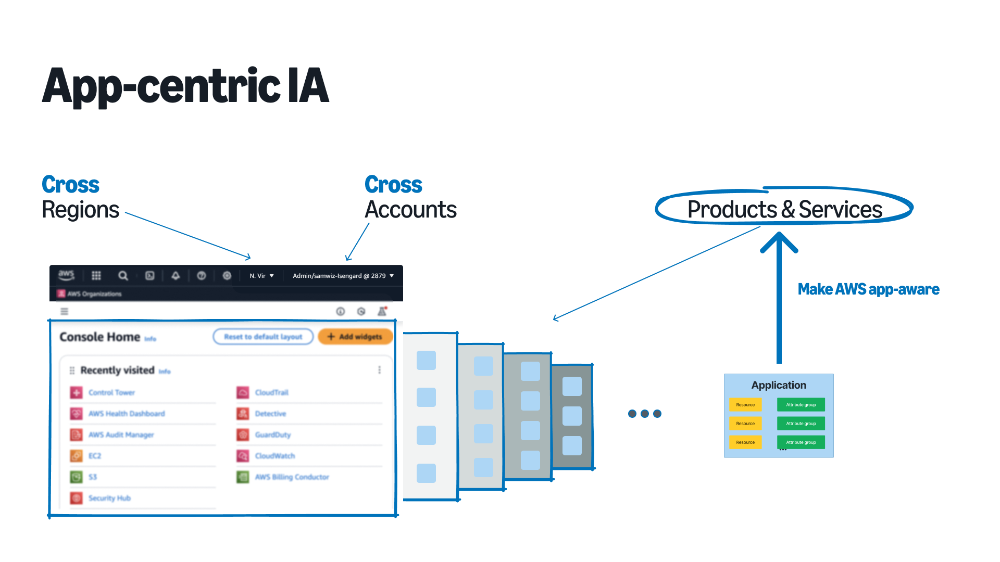

AWS AppRegistry - Application-centric experience for AWS
Description
The Application Registry is the feature of Service Catalog which provides customers with an application repository and will be the single source of truth for all applications deployed in AWS. It provides customers a way to group and engage with their resources in a way which makes sense to them, rather than being based on the underlying service delineations, regions, or AWS accounts.
Role
UX Designer
Collaborators
Ed Mahlum
Vikram Singh
Gavin Jin
Grace Kitzmiller
Read the launch blog-post here:
CHALLENGE
Since its launch in 2008, AWS has experienced exponential growth, expanding from a few core services in a couple of regions to over 200 global, on-demand services across 34+ geographical regions by 2021. This rapid expansion, coupled with enterprise customers adopting multi-account strategies spanning 100-5,000 accounts, has led to significant challenges in infrastructure management and visibility.These challenges include a fragmented view of AWS infrastructure across business use-cases, the need for manual data aggregation from multiple accounts and regions, an increasingly complex AWS Management Console information architecture, and a lack of application-centric perspective for resource management. These issues collectively hinder customers' ability to gain a comprehensive understanding of their AWS infrastructure, making it difficult to effectively manage resources, understand business value, and maintain operational context across their expansive AWS environments.
Goal: S-Team goal for AppRegistry to integrate with 10 AWS services.
My Role: Crafting the vision for an application-centric AWS, Co-defining and influencing the product strategy, Gathering and analyzing UX requirements across other AWS services, Influence engineering team decisions to enable UX solution delivery.

PROCESS
I met with 15 service teams (PMs and UX designers) to understand how we could integrate the concept of applications into their service consoles. Working backwards from these meeting and requirements, I categorized the services into two groups: 1) Producers - Services that produce applications (create application); and 2) Consumers - Services that consume applications (list application). I presented a conceptual diagram to AWS-wide stakeholders to clarify this categorization and continued to explore the design for these 2 use-cases.
DESIGN
1. Create application Widget: This form consists of standard Cloudscape (AWS design system) consisting of 4 inputs to create an application object - Application details (name and description), AWS resources, AWS metadata (Attribute groups), and AWS tags.

2. List application Widget: This widget contains a list of all application in a given account (cross-share applications) and region. Designed a smaller version to support flows where application had to be selected to take an action and a full-page list view for services with a dedicated applications list view.
3. Surprise Widget - Console Home: Part of the same S-Team goal, there was a desire to place the application construct on the new AWS console homepage. This would provide easy access to your AppRegistry applications from the AWS homepage. Since there was no design language for the console home, we decided to partner with the central UX team to define the design requirements and eventually to help our customers navigate to a single-pane of glass for managing their applications.
OUTCOME & METRICS
LaunchWe launched the concept of applications in our annual conference Re:invent with our CTO announcing the launch and a bunch of launch announcements followed all AWS service integrations.
JOURNEY AHEAD
1. Service integrations: I helped the team with 10 service integrations to help us achieve our goals. The job is to integrate these widgets across AWS to truly make application a first class object and deliver a app-centric experience.2. Resource breath: This version of application object only supports CFN stacks. There is more plumbing work to be done by our awesome engineers to help bring other resources into the application object and through better ways such as tags.
2. Enrich metadata: Currently the application metadata is limited, we need to work closely with cost, security, and other internal team to surface application metadata on the console home.